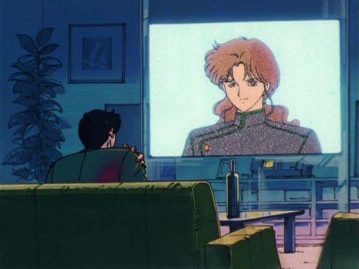

"Here we... here we... Here we fucking go!!!" - Jeremy Corbyn, MP
Has it been worth it? We've waited thirty-three episodes for this. We're finally in the plot mines for Sailor Moon Classic!
Okay, I've got to get this out of the way: it is jarring to hear Minako's voice actor sound surprisingly different to her later appearances somehow. Maybe it's because I'm watching this episode again 4 years later, but I swear she sounds different in the later four series.
Anyway, in the second episode of this three-parter (technically, anyway) we start off where we left with the Senshis all lined up on the dock asking Venus if she is the princess. Obviously she's not! She's also far too cool to hang out with the other inners, deciding to fuck off on her own like she's being doing for the last NINE MONTHS. Mamoru has a bit of a crisis over his injured shoulder and how he couldn't protect Sailor Moon last time around, and then gets contacted on the Gay-o-vision by Gay Jadeite to challenge him to a personal duel over the rainbow crystals. The sexual tension in this scene is absolutely palpable - I am secretly hoping the word "duel" is code for "passionate gay sex under the moonlight". I want that twink fucking exterminated.
Usagi finally figures out that Mamoru is the civillian identity of Tuxedo Mask after bashing him on the back where his wound is - in the same spot as where he got injured last night. When I got really badly sunburnt as a kid when I went on a "school trip" to Spain, my Spanish teacher repeatedly slapped me on the back as a friendly gesture where the sunburn was. She follows him to the skyscraper where the duel will take place and they both get teleported into Gay Jadeite's arena who obviously double crosses Mamoru because he's so dedicated to the cause of evil.
The other Senshis arrive on the scene and vandalise the fuck out of the building by blasting the doors open to rescue Usagi and Mamoru, who are sharing their life stories in the elevator. Mamoru "lost his memories" in a car accident and wants the silver crystal to regain them. Turquoise Daddy starts to absolutely fuck everything up and begins merging the Dark Kingdom with the real world - and Usagi has to transform to Sailor Moon in front of Mamoru to save both of them from Gay Jadeite raining down death. This is a really superbly directed part of the episode, with the camera cuts of Usagi's initial announcements landing really well, as well as the transformation sequence intercut with Mamoru's reaction.
I also love the cuts of Mamoru's previous "advice" now that she knows who Tuxedo Mask really is, showing it in a whole new light. Yeah, he was mean a lot of the time - but he was also subconsciously pushing Usagi to be a better person due to his hidden knowledge that she was really Sailor Moon all along.
Gay Jadeite then - literally - backstabs Tuxedo Mask after promising to fight him fairly by shooting one of his Zoisite crystals towards Usagi, which Mamoru bravely intercepts to save Usagi. The animation, the backing music, just really everything here combines to make a genuinely emotional scene of the Silver Crystal and Princess Serenity reappearing. The producers did a fantastic job and really learned from last time how to actually set up a surprise attack (by making it not-so-surprising, actually) and actually having the emotional scene land properly.
My primary complaint with this episode is that there's a whole bunch of time wasting around the middle-end, especially with the inners appearing to do absolutely nothing except announce the obvious. Sure, they might setting up for the next episode (given that this is a cliffhanger) but I don't really think that excuses it. It would've been a bit more poignant if they had Luna travel with Usagi if they really wanted an announcer and only have the inners arrive next time. I give this episode a 4.5/5 otherwise for being a solid piece of emotional work - the first such time this show has managed to land one as important as this.
{% endblock %}